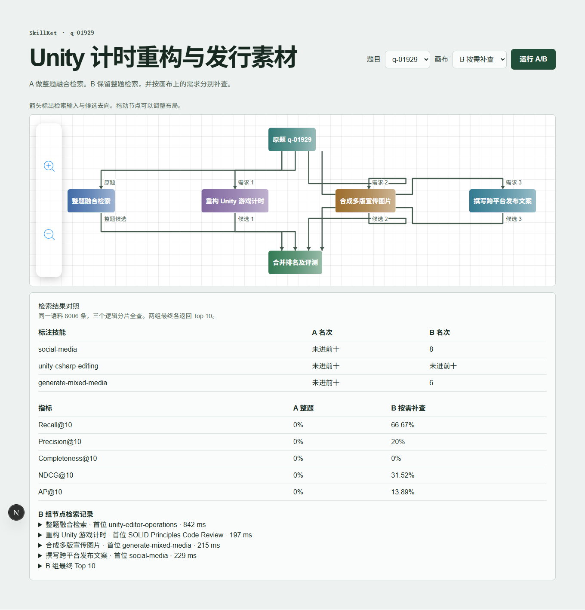

q-01929 Unity 计时重构与发行素材
宣传素材和社媒文案的标注技能各在对应分支排第 1，最终分别排第 6、8。unity-csharp-editing 未进入候选前十。
A/B 指标
| 指标 | A 整题 | B 按需求补查 |
|---|
| Recall@10 | 0.00% | 66.67% |
| Precision@10 | 0.00% | 20.00% |
| Completeness@10 | 0.00% | 0.00% |
| NDCG@10 | 0.00% | 31.52% |
| AP@10 | 0.00% | 13.89% |
数据集标注技能的名次
| 标注技能 | A | B |
|---|
| social-media | 未进前十 | 8 |
| unity-csharp-editing | 未进前十 | 未进前十 |
| generate-mixed-media | 未进前十 | 6 |
原题与 B 组各节点
整题融合检索
We're launching a marketing push for our indie game studio "Neon Forge" and our upcoming Unity puzzle game called "Chrono Shift." I need three things done together: (1) In our Unity project, refactor the `GameSessionManager.cs` script — extract the timer logic into a new `CountdownTimer` class, add a public event `OnTimerExpired`, and wire it up so `GameSessionManager` subscribes to that event instead of polling every frame. (2) Using three of our gameplay screenshot PNGs (I'll attach them), composite promotional ad creatives with overlaid text — the first should say "Bend Time. Break Rules." with our logo in the corner, the second "Coming Q3 2025" with a Steam wishlist CTA button, and the third a square format with "From the creators of Void Circuit" tagline. (3) Write a set of launch announcement posts — a LinkedIn post targeting game devs and industry folks highlighting our custom ECS-based timer architecture as a technical achievement, a Twitter/X thread (5 tweets) building hype with emoji-heavy casual tone and a call to wishlist, and an Instagram caption to pair with the square creative. Make sure the social copy references the visual style shown in the creatives and that the Unity refactor follows SOLID principles.
- unity-editor-operations
- unity-ecs-patterns
- Unity Script Validator
- unity-game-ugui-design
- social-media-generator
- unity-game-ui-toolkit-design
- unity-editor-imgui-design
- unity-scene-management
- social-content
- ckm:banner-design
重构 Unity 游戏计时
Extract CountdownTimer from Unity GameSessionManager and publish an OnTimerExpired event to replace polling. Preserve SOLID principles in the puzzle game's timer component.
- SOLID Principles Code Review
- Unity Script Validator
- solid-drawing-mastery
- java-design-principles
- game-skill-system-expert
- code-quality-standards
- unity-game-ugui-design
- project-standards
- development-guidelines
- unity-game-ui-toolkit-design
合成多版宣传图片
Composite three game screenshots into promotional creatives with overlaid copy, the studio logo, a Steam wishlist CTA, and a square variant for social channels.
- generate-mixed-media
- creative-variants
- bg3-steam-launcher
- nanobanana-skill
- creative-iteration-playbook
- content-variants
- logo-with-variants
- ckm:banner-design
- media-composition
- creative-qa-checklist
撰写跨平台发布文案
Draft a LinkedIn post on the game's technical architecture, a five-post X launch thread and an Instagram caption. Match the tone of each channel and link the copy to the promotional visuals and Steam wishlist.
- social-media
- social-content
- content-writer
- game-recap-generator
- linkedin-post
- blog-to-linkedin
- social-media-generator
- bg3-steam-launcher
- writer
- bmad-architecture-design
最终候选
A Top 10
- unity-editor-operations
- unity-ecs-patterns
- Unity Script Validator
- unity-game-ugui-design
- social-media-generator
- unity-game-ui-toolkit-design
- unity-editor-imgui-design
- unity-scene-management
- social-content
- ckm:banner-design
B Top 10
- unity-editor-operations
- unity-ecs-patterns
- Unity Script Validator
- SOLID Principles Code Review
- solid-drawing-mastery
- generate-mixed-media
- creative-variants
- social-media
- social-content
- unity-game-ugui-design
RSI 实测截图
